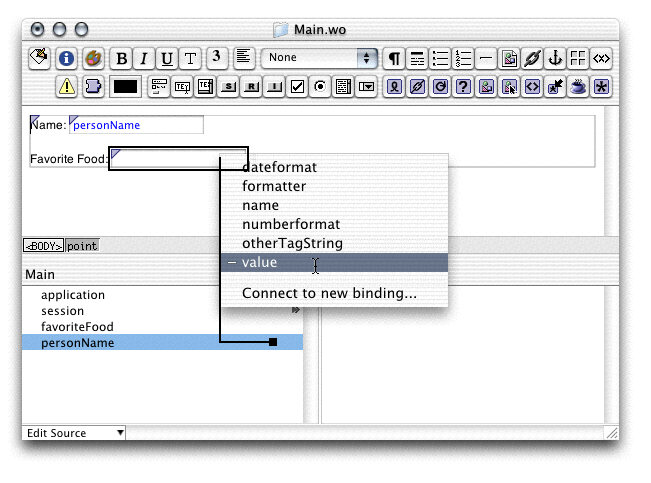

| PATH |

Input elements are bound to variables in a way very similar to the way display elements are. In fact, input elements are essentially bidirectional display elements—they get a value from the object when the response is generated and send a value back to the object when a request is received. See "Request Processing" for more information.
For this example, you display a bit of information about the user. You'll use text input fields to get data from the user, and once she's entered it, you'll use a WOConditional to hide the text fields and display the data. Then you'll encapsulate the user data into a custom object so you can generate an array of them.
First, create a new project named UserEntry. Edit the Main component with WebObjects Builder. The first step is to add variables for the data the user enters. Then, you add WOTextFields and bind them to the variables.
personName and favoriteFood to
the Main component using the Edit Source menu. These variables should
be of type java.lang.String.
Make sure the three options below "Generate source code for"
are selected so that an instance variable and accessor methods are
generated.Note: Avoid
calling a variable name.
This name is used by WebObjects and using it for your own purposes
will lead to unexpected results! |
addUser.
Accept the default of null for
the component's return value. In a later step, you'll customize this method to set some additional variables.
All form elements, including submit buttons, must be within a WOForm to function.
Add two labels "Name: "
and "Favorite Food: "
in separate lines.
Add a WOTextField next to the Name label by choosing Forms > WOTextField.
Add a second WOTextField next to the Favorite Food label.
Place the cursor at the end of last text field and press Shift-Enter.
Choose Forms > WOSubmitButton to add a button to use to submit the form.
value attribute
of the appropriate text fields, just as with the WOString. See Figure 5-3.Figure 5-3 Binding the Favorite Food text field to personName
addUser action
to the action attribute
of the WOSubmitButton.Main.wo.All the user interface elements are connected. The WOTextFields
set the properties bound to them during request processing. The
Java method bound to the WOSubmitButton's action attribute
is called when the user clicks the submit button.
© 2001 Apple Computer, Inc.